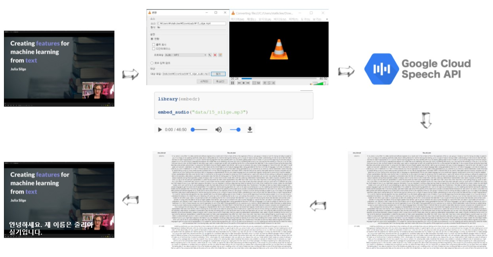
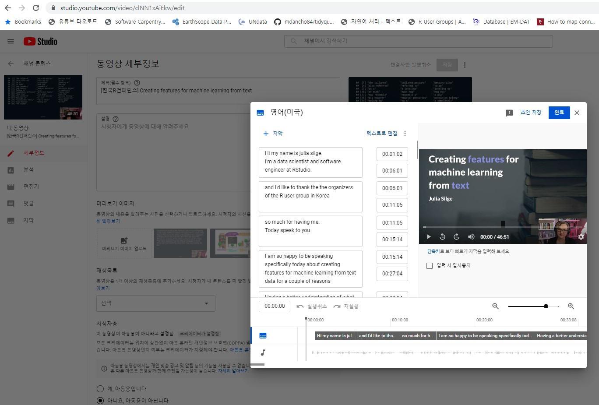
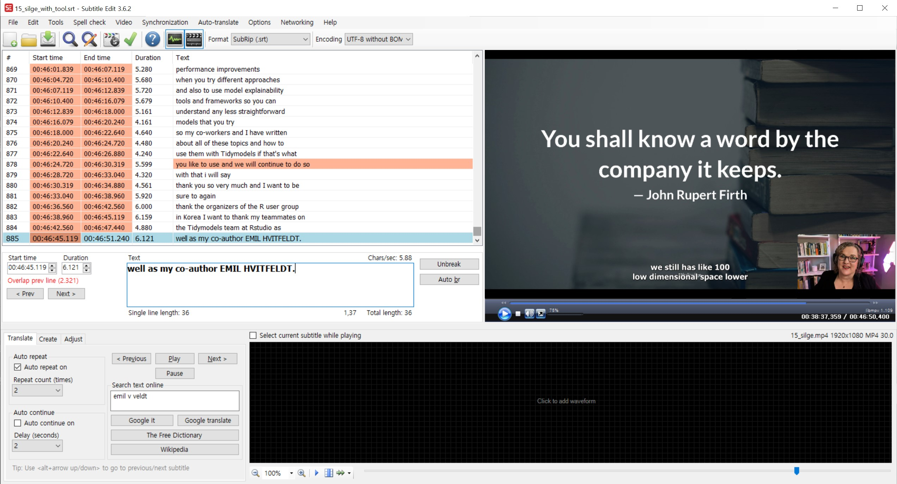

동영상에서 오디오를 추출해서 Speech to Text (STT)가 가능한 .flac 형태로 저장한다. 유튜브 동영상에서 오디오를 추출하는 사례를 speech-to-text - 음성을 텍스트로 변환에서 자세한 사항 참조한다.
library(embedr)
library(tidyverse)
embed_audio("data/julia_silge/15_silge.mp3")Cloud Speech-to-Text API를 사용해서 오디오에서 텍스트를 추출한다. 하지만 1분이 넘어가는 경우 제약이 있기 때문에 Google Cloud Storage에 앞서 추출한 .flac 파일을 GCS 버킷에 넣어 사용해야만 한다. 추출한 오디오 .flac 파일을 GCS 버킷에 담는 자세한 과정은 Google Cloud Storage - googleCloudStorageR을 참조한다.
구글 STT API를 활용하게 되면 오디오 파일을 입력으로 받아 추출한 텍스트와 시점정보를 함께 반환한다. 객체명$transcript에 오디오에서 추출된 텍스트, 객체명$timings에 추출된 텍스트 시점정보가 함께 저장되어 있다.
약 45분 오디오를 구글 STT에서 처리하는데 2,820 초가 소요되었다.
library(googleLanguageR)
kt_config <- list(encoding = "FLAC",
audioChannelCount = 2,
diarizationConfig = list(
enableSpeakerDiarization = TRUE
))
julia_gcs <- "gs://julia_silge/15_silge.flac"
julia_tts <- gl_speech(julia_gcs, languageCode = "en-US", sampleRateHertz = 44100L, asynch = TRUE,
customConfig = kt_config)
julia_tts_res <- gl_speech_op(julia_tts)
# 2021-11-05 15:49:59 -- Asynchronous transcription finished.
# 2021-11-05 15:49:59 -- Speech transcription finished. Total billed time: 2820s
julia_stt_tbl <- julia_tts_res$transcript %>%
as_tibble()
julia_stt_tbl %>%
write_rds("data/julia_silge/julia_stt_tbl.rds")
julia_stt_timing_list <- julia_tts_res$timings
julia_stt_timing_list %>%
write_rds("data/julia_silge/julia_stt_timing_list.rds")추출한 텍스트와 전문은 다음과 같다. 다운로드: STT 원본 TEXT
library(reactable)
julia_stt_tbl <-
read_rds("data/julia_silge/julia_stt_tbl.rds")
julia_stt_raw_text <- julia_stt_tbl %>%
summarise(stt_raw_text = paste(transcript, collapse = "\n"))
# julia_stt_raw_text %>%
# write_lines("data/julia_silge/julia_stt_raw_text.txt")
str_sub(julia_stt_raw_text, 1, 1000) %>%
as_tibble() %>%
reactable::reactable(
defaultColDef = colDef(
header = function(value) gsub(".", " ", value, fixed = TRUE),
cell = function(value) format(value, nsmall = 1),
align = "center",
minWidth = 70,
headerStyle = list(background = "#f7f7f8")
),
bordered = TRUE,
highlight = TRUE)다음으로 중요한 것은 시점정보다. 이를 위해서 총 45분 강연이라 5분 단위로 짤라 9개로 쪼개 추후 자연어 처리가 가능하도록 조치한다.
julia_stt_timing_list <-
read_rds("data/julia_silge/julia_stt_timing_list.rds")
julia_stt_timing_tbl <- map_df(julia_stt_timing_list, rbind) %>%
as_tibble() %>%
select(-speakerTag)
julia_stt_timing_five_tbl <- julia_stt_timing_tbl %>%
mutate(startTime = parse_number(startTime),
endTime = parse_number(endTime)) %>%
# 45 분 / 9 구간 = 5 분/구간
mutate(nine_interval = cut( startTime,
breaks = unique(quantile(startTime, probs = seq.int(0, 1, by = 1 / 9))),
include.lowest=TRUE)) %>%
group_by(nine_interval) %>%
summarise(five_min_text = paste(word, collapse = " "))
julia_stt_timing_five_tbl %>%
slice(1) %>%
reactable::reactable(
defaultColDef = colDef(
header = function(value) gsub(".", " ", value, fixed = TRUE),
cell = function(value) format(value, nsmall = 1),
align = "center",
minWidth = 70,
headerStyle = list(background = "#f7f7f8")
),
columns = list(
nine_interval = colDef(minWidth = 20),
five_min_text = colDef(minWidth = 140)
),
bordered = TRUE,
highlight = TRUE).srt 파일구글 STT의 경우 상세한 시점정보가 제공되나 단어 STT 시간과 거의 1분 단위로 기계적으로 쪼개진 정보만 제공되고 있다. 데이터 가져오기 - 유튜브, 영화자막을 참고하여 자막정보를 만들어보자.
자막 .srt 파일을 제작하는 다른 방식은 유튜브 자막 자동생성 기능을 활용하는 것이다. 일단 동영상을 업로드하고 공개로 설정을 해주면 기계가 자동으로 STT 를 수행하여 자막을 추출할 수 있게 도움을 준다.

.srt 파일 교정Subtitle Edit 최신 버전을 설치하여 구글 STT 기능으로 추출된 텍스트를 교정한다. 구글 STT는 아무래도 R 데이터 과학 전문용어에는 한계가 있기 때문에 RStudio, dplyr와 같은 용어오 stopwords, n-gram와 같은 NLP 전문용어 그리고 um 의성어 등도 있는 그대로 텍스트로 떨구기 때문에 이런 용어를 교정할 필요가 있다. 교정한 영문 SRT 파일

library(srt)
srt_eng_raw <- read_lines("data/julia_silge/15_silge_english.srt")
srt_eng_text <- srt_eng_raw[srt_eng_raw != ""]
srt_eng_text[1:10] [1] "1"
[2] "00:00:01,120 --> 00:00:08,639"
[3] "Hi my name is julia silge. "
[4] "I'm a data scientist and software engineer at RStudio."
[5] "2"
[6] "00:00:06,080 --> 00:00:13,519"
[7] "and I'd like to thank the the organizers of the R user group in Korea"
[8] "3"
[9] "00:00:11,200 --> 00:00:18,080"
[10] "so much for having me. " read_srt() 함수를 사용하여 전체 내용을 살펴보면 다음과 같다.
(keynote <- read_srt(path = "data/julia_silge/15_silge_english.srt", collapse = " "))# A tibble: 885 x 4
n start end subtitle
<int> <dbl> <dbl> <chr>
1 1 1.12 8.64 Hi my name is julia silge. I'm a data scientist and softw~
2 2 6.08 13.5 and I'd like to thank the the organizers of the R user gro~
3 3 11.2 18.1 so much for having me. Today speak to you
4 4 15.5 24 I am so happy to be speaking specifically today about crea~
5 5 21.1 29.4 features for machine learning from text data for a couple ~
6 6 27.2 34.5 Having a better understanding of what we do to take text d~
7 7 31.7 36.9 and then to make it appropriate
8 8 34.5 42.9 as an input for machine learning algorithms has many benef~
9 9 39.7 45.0 both if you are directly getting ready
10 10 42.9 50.7 to train a model or if you're at the beginning of some tex~
# ... with 875 more rows.srt 파일 번역먼저 텍스트를 하나로 묶어 이를 전체 문자 벡터로 만든 후에 이를 구글 번역기에 넣어 한글로 번역한다.
library(googleLanguageR)
eng_plain_text <- keynote %>%
summarise(eng_text = paste(subtitle, collapse = " ")) %>%
pull()
kor_translated_text <- googleLanguageR::gl_translate(eng_plain_text, target = "ko", source = "en", model = "nmt")
# 2021-11-07 10:53:00 -- Translating text: 33505 characters -
kor_translated_text %>%
write_rds("data/julia_silge/full_ko_translation.rds")영어 원문과 구글 번역기를 돌려 나온 결과물을 나란히 놓고 비교해보자.
kor_translated_text <-
read_rds("data/julia_silge/full_ko_translation.rds")
kor_translated_text %>%
select(text, translatedText) %>%
reactable::reactable(
defaultColDef = colDef(
header = function(value) gsub(".", " ", value, fixed = TRUE),
cell = function(value) format(value, nsmall = 1),
align = "center",
minWidth = 70,
headerStyle = list(background = "#f7f7f8")
),
# columns = list(
# translatedText = colDef(minWidth = 100),
# text = colDef(minWidth = 100)
# ),
bordered = TRUE,
highlight = TRUE).srt 자막 번역통번역이 아니라 .srt 파일에 나온 자막 시작시간과 종료시간을 고려하여 번역작업을 수행해보자.
keynote_gl_tbl <- keynote %>%
mutate(translation = googleLanguageR::gl_translate(subtitle, target = "ko", source = "en", model = "nmt"))
keynote_gl_tbl %>%
write_rds("data/julia_silge/keynote_gl_tbl.rds").srt 파일로 번역한 것을 영어 원문과 비교해 보면 다음과 같다.
keynote_gl_tbl <-
read_rds("data/julia_silge/keynote_gl_tbl.rds")
translation_obj <- keynote_gl_tbl %>%
pull(translation)
translation_obj %>%
select(translatedText) %>%
bind_cols(keynote_gl_tbl %>% select(-translation)) %>%
select(n, start, end, subtitle, translatedText) %>%
mutate(start = scales::comma(start),
end = scales::comma(end)) %>%
reactable::reactable(
defaultColDef = colDef(
header = function(value) gsub(".", " ", value, fixed = TRUE),
cell = function(value) format(value, nsmall = 1),
align = "center",
minWidth = 70,
headerStyle = list(background = "#f7f7f8")
),
columns = list(
n = colDef(minWidth = 10),
start = colDef(minWidth = 25),
end = colDef(minWidth = 25),
subtitle = colDef(minWidth = 100),
translatedText = colDef(minWidth = 100)
),
bordered = TRUE,
highlight = TRUE).srt 번역자막 내보내기마지막으로 이렇게 기계 번역을 완료한 .srt 파일을 내보내서 기계번역을 입혀보도록 하자.
keynote_kor_srt <- translation_obj %>%
select(translatedText) %>%
bind_cols(keynote_gl_tbl %>% select(-translation)) %>%
select(n, start, end, subtitle = translatedText)
# 기대했던 결과가 아님!!!
keynote_kor_srt %>%
srt::write_srt("data/julia_silge/15_silge_kor_google.srt")데이터 과학자 이광춘 저작
kwangchun.lee.7@gmail.com